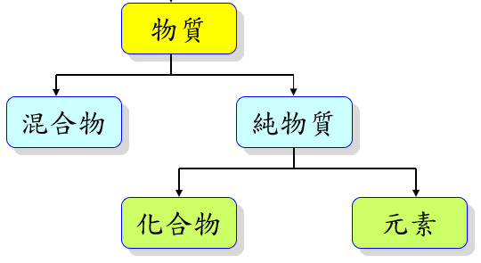

基本測量
Basic Measuring
伽利略在十七世紀時主張以實驗來檢驗所有的真理，而測量室所有科學實驗的基礎，因此讓我們一起來學習「基本測量」。

伽利略在十七世紀時主張以實驗來檢驗所有的真理，而測量室所有科學實驗的基礎，因此讓我們一起來學習「基本測量」。

1. 實驗是研究科學、證實理論很重要的重要方式，但實驗都免不了測量，通常會與一個選定的參考量（單位）做比較，才能得知測量值的大小。2. 使用不同的測量單位，會呈現出不同的測量數值，但值不變。3. 測量的單位須經過大家公認才能方便使用，因此國際間共同制定了一套標準：國際單位制（SI單位）。

例如：氧氣 + 氫氣 -->水鎂 + 氧氣 -->氧化鎂碳 + 氧氣 -->二氧化碳